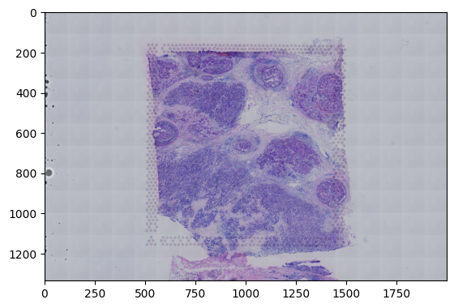

VisiumReader
This module provides the VisiumReader class for reading Visium data.
- class storm.VisiumReader.VisiumReader
Bases:
objectA class for reading Visium spatial standard data files.
This class provides methods to read image files, tissue position information, and H5 files from a specified folder, and store relevant data in class attributes.
- read_all(folder_path, method, key, gene_token, medium_token_path=None)
Read all necessary Visium data files from the specified folder.
This method calls other reading methods to read the image, tissue position information, and H5 file in sequence, and stores the data in class attributes.
- Parameters:
folder_path (str) – The path to the folder containing the necessary files.
method (str) – The data processing method, such as ‘binary’, ‘raw’, ‘norm’, ‘medium’, etc.
key (str) – The key used to set the gene token,value should be ‘id’ or ‘symbol’
gene_token (str) – The gene token csv file.
medium_token_path (str, optional) – The path to the medium token file. Defaults to None.
- Returns:
None
from storm.VisiumReader import VisiumReader import matplotlib.pyplot as plt Reader=VisiumReader() Reader.read_all(folder_path="../Visium_Human_Breast_Cancer",gene_token="../gene_token_homologs.csv",method="binary",key="symbol") plt.imshow(Reader.raw_he) print(Reader.adata , Reader.tissue_position_list.head(5) , Reader.scaleJson)
gene id matches: human:15597 mouse:16
AnnData object with n_obs × n_vars = 4898 × 15757 var: 'gene_ids_x', 'feature_types', 'genome', 'symbol_x', 'gene_ids_y', 'symbol_y' in_tissue array_row array_col pxl_row_in_fullres \ barcode ACGCCTGACACGCGCT-1 1 0.0 0.0 4650.0 TACCGATCCAACACTT-1 1 1.0 1.0 4887.0 ATTAAAGCGGACGAGC-1 1 0.0 2.0 4651.0 GATAAGGGACGATTAG-1 1 1.0 3.0 4888.0 GTGCAAATCACCAATA-1 1 0.0 4.0 4653.0 pxl_col_in_fullres barcode ACGCCTGACACGCGCT-1 12203.0 TACCGATCCAACACTT-1 12338.0 ATTAAAGCGGACGAGC-1 12475.0 GATAAGGGACGATTAG-1 12609.0 GTGCAAATCACCAATA-1 12747.0 tissue_hires_scalef tissue_lowres_scalef fiducial_diameter_fullres \ 0 0.048109 0.014433 285.1934 spot_diameter_fullres 0 176.5483
- read_h5(h5_path, method, key, gene_token, medium_token_path=None)
Read H5 or MTX files and process the data based on the specified method.
This method reads single - cell data from H5 or MTX files, sets the gene token, and processes the data matrix according to the specified method.
- Parameters:
h5_path (str) – The path to the H5 or MTX file.
method (str) – The data processing method, such as ‘binary’, ‘raw’, ‘norm’, ‘medium’, etc.
key (Any) – The key used to set the gene token.
gene_token (Any) – The gene token.
medium_token_path (str, optional) – The path to the medium token file. Defaults to None.
- Returns:
None
from storm.VisiumReader import VisiumReader Reader=VisiumReader() Reader.read_h5(h5_path="../Visium_Human_Breast_Cancer/filtered_feature_bc_matrix.h5",gene_token="../gene_token_homologs.csv",method="binary",key="symbol") print(Reader.adata)
gene id matches: human:15597 mouse:16
AnnData object with n_obs × n_vars = 4898 × 15757 var: 'gene_ids_x', 'feature_types', 'genome', 'symbol_x', 'gene_ids_y', 'symbol_y'
- read_img(raw_img_path)
Read an image file from the specified path and store it in a class attribute.
If the image has 4 channels (RGBA), it will be converted to 3 channels (RGB).
- Parameters:
raw_img_path (str) – The path to the raw image file.
- Returns:
None
from storm.VisiumReader import VisiumReader import matplotlib.pyplot as plt Reader=VisiumReader() Reader.read_img("../Visium_Human_Breast_Cancer/spatial/tissue_hires_image.png") plt.imshow(Reader.raw_he)
<matplotlib.image.AxesImage at 0x26d1a0b70d0>
- read_tissue_position(raw_tpl_path, json_path)
Read tissue position information from CSV and JSON files.
This method reads the tissue position data from a CSV file, processes the data based on the number of columns, sets the index to ‘barcode’, filters the data, converts data types, and reads scale information from a JSON file.
- Parameters:
raw_tpl_path (str) – The path to the raw tissue position CSV file.
json_path (str) – The path to the JSON file containing scale information.
- Returns:
None
from storm.VisiumReader import VisiumReader Reader=VisiumReader() base_path="../Visium_Human_Breast_Cancer/spatial" Reader.read_tissue_position(raw_tpl_path=f"{base_path}/tissue_positions_list.csv", json_path=f"{base_path}/scalefactors_json.json") print(Reader.tissue_position_list.head(5))
in_tissue array_row array_col pxl_row_in_fullres \ barcode ACGCCTGACACGCGCT-1 1 0.0 0.0 4650.0 TACCGATCCAACACTT-1 1 1.0 1.0 4887.0 ATTAAAGCGGACGAGC-1 1 0.0 2.0 4651.0 GATAAGGGACGATTAG-1 1 1.0 3.0 4888.0 GTGCAAATCACCAATA-1 1 0.0 4.0 4653.0 pxl_col_in_fullres barcode ACGCCTGACACGCGCT-1 12203.0 TACCGATCCAACACTT-1 12338.0 ATTAAAGCGGACGAGC-1 12475.0 GATAAGGGACGATTAG-1 12609.0 GTGCAAATCACCAATA-1 12747.0